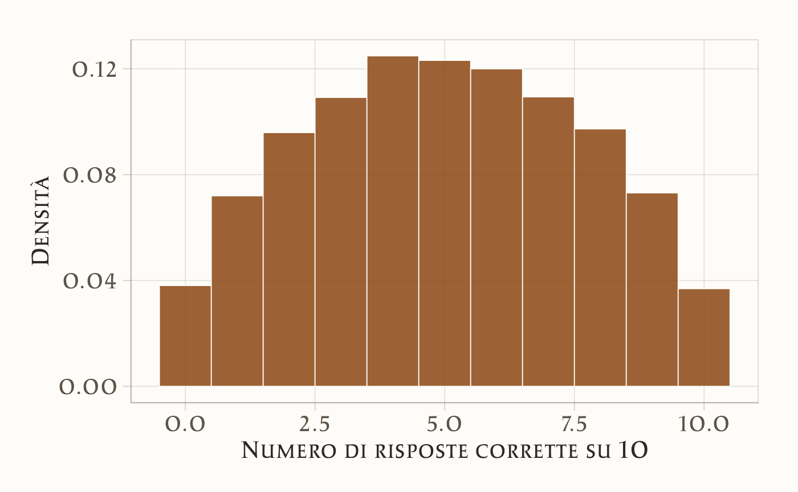
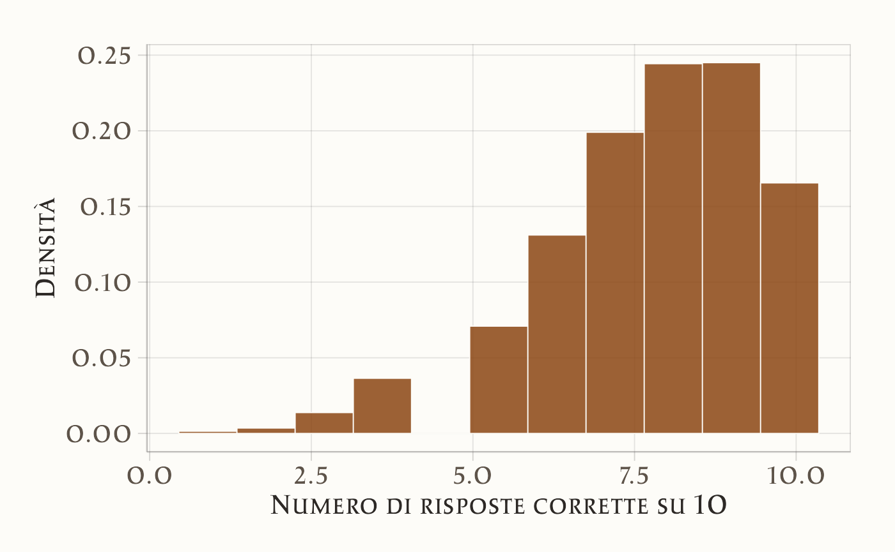
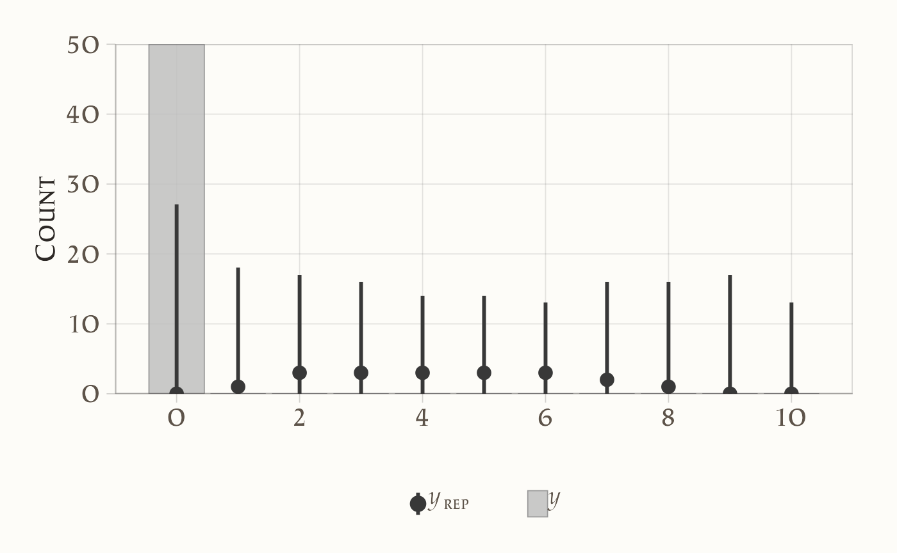
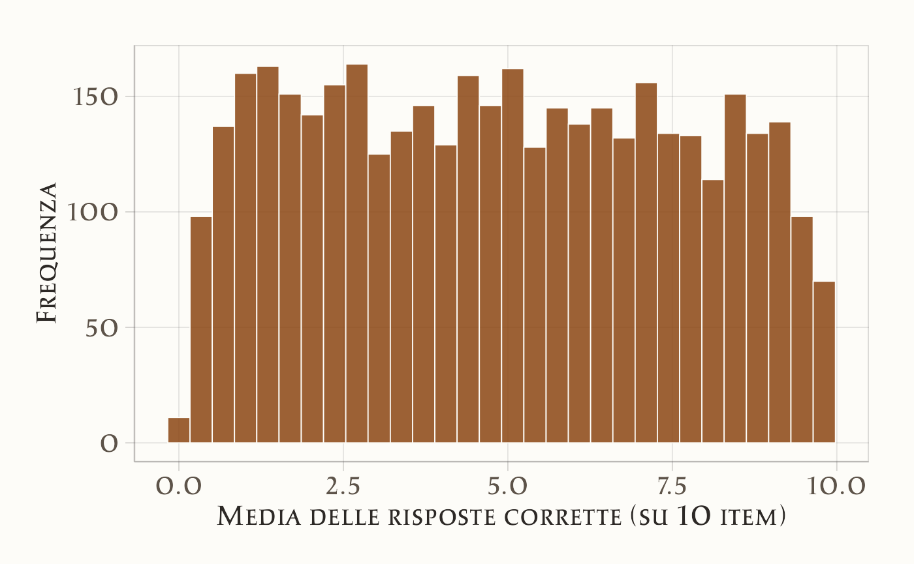
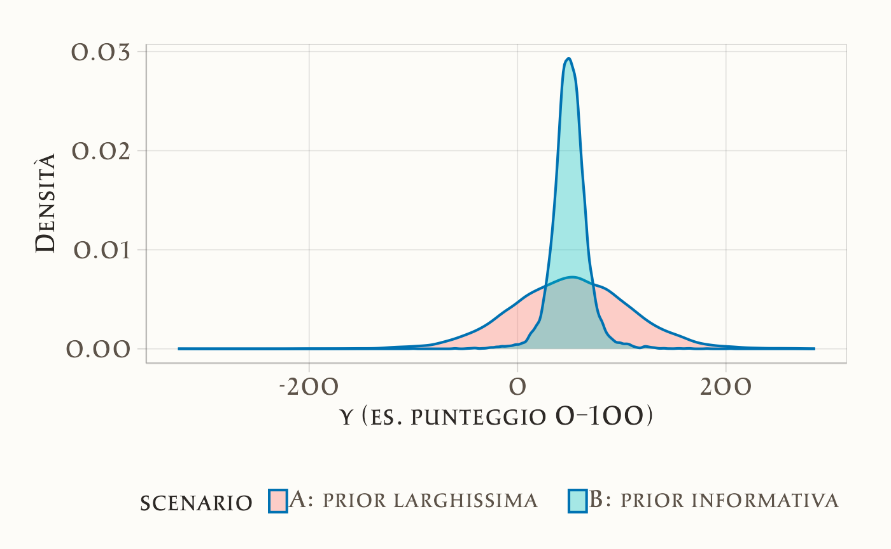
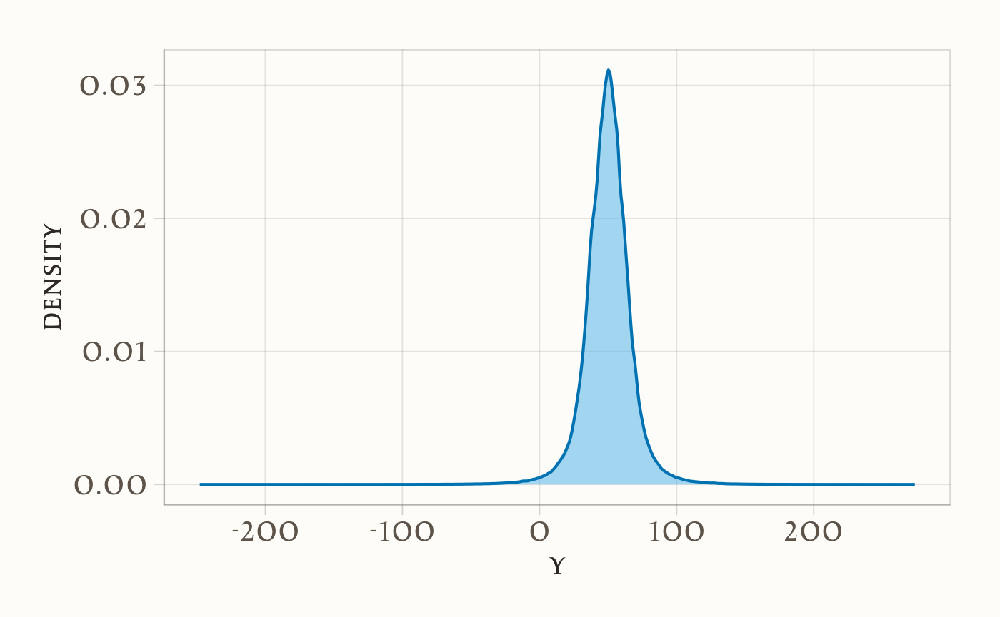
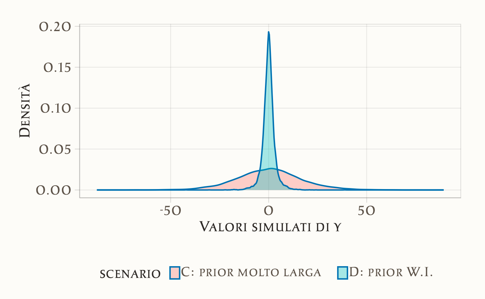
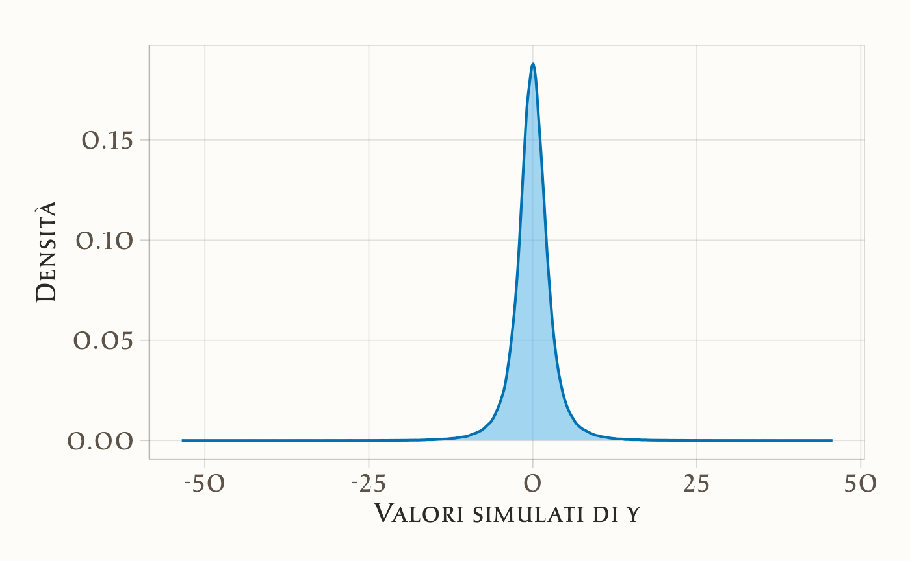
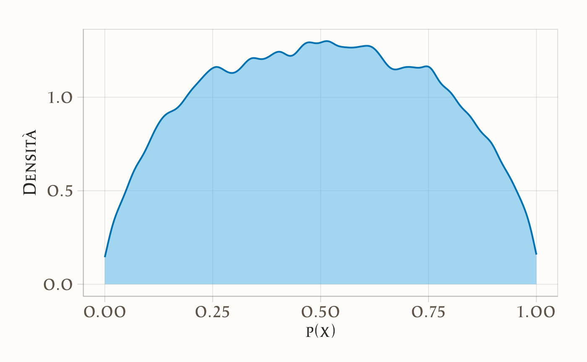

9 Controllo predittivo a priori
“The prior distribution expresses our beliefs, but its real meaning is revealed in the predictions it makes.”
– George E. P. Box & George C. Tiao, Bayesian Inference in Statistical Analysis (1973)
Introduzione
Nei capitoli precedenti abbiamo visto che l’inferenza bayesiana nasce dall’integrazione tra ciò che sappiamo prima (i priori) e ciò che osserviamo nei dati (la verosimiglianza). Abbiamo anche discusso il problema del bilanciamento tra assunzioni iniziali ed evidenza empirica, sottolineando che i priori non sono un dettaglio tecnico, ma una parte essenziale del ragionamento statistico. A questo punto si impone una domanda pratica: come possiamo valutare se i priori che abbiamo scelto sono ragionevoli?
Un modo diretto e intuitivo è ricorrere ai controlli predittivi sui priori [prior predictive checks; Gelman et al. (2020)]. L’idea è semplice: se i priori rappresentano le nostre credenze prima di vedere i dati, allora dovremmo poterli usare per simulare dei dati “ipotetici” e chiederci se questi assomigliano a ciò che potremmo realisticamente osservare in psicologia. Se i dati simulati appaiono del tutto implausibili, significa che i nostri priori non stanno catturando in modo adeguato le conoscenze di partenza.
In questo capitolo introdurremo il concetto e la pratica dei controlli predittivi sui priori. Vedremo come si eseguono, perché sono fondamentali per una modellazione coerente e quali errori comuni ci aiutano a evitare.
Panoramica del capitolo
- Che cos’è la distribuzione predittiva a priori e perché è importante nell’inferenza bayesiana.
- Simulare dati prima di osservare quelli reali, per valutare la coerenza tra il modello e ciò che ci aspettiamo dal fenomeno studiato.
- Applicare il controllo predittivo a priori nel caso beta-binomiale, con esempi in R.
9.0.1 L’idea fondamentale
Il prior predictive check si basa su una domanda chiave: “Se questa distribuzione a priori riflette davvero le nostre aspettative, quali dati dovremmo osservare in pratica?” In altre parole, simuliamo dati plausibili generati dal modello prima di analizzare i dati reali, per verificare se le nostre assunzioni iniziali producono risultati coerenti con la realtà teorica o empirica del fenomeno studiato.
9.0.1.1 Perché è importante?
Nei modelli bayesiani, le distribuzioni a priori codificano la nostra conoscenza (o ignoranza) preliminare. Tuttavia:
-
prior apparentemente innocue possono, combinate con il modello di verosimiglianza, generare previsioni implausibili (es., valori al di fuori del range possibile, comportamenti estremi non realistici);
- prior troppo informative possono dominare ingiustificatamente l’evidenza dei dati, mentre prior troppo vaghe possono portare a stime instabili.
Il prior predictive check ci permette di esplorare la distribuzione predittiva a priori, \(p(\tilde{y})\), dove \(\tilde{y}\) sono dati simulati, per identificare incongruenze prima della fase inferenziale.
9.1 La definizione formale
Non conoscendo i parametri \(\theta\), non possiamo formulare un’unica predizione \(p(\tilde y \mid \theta)\). Invece, la distribuzione predittiva a priori \(p(\tilde y)\) combina le predizioni di tutti i possibili valori di \(\theta\), pesandoli in base alla loro plausibilità a priori.
È come consultare un gruppo di esperti (i possibili \(\theta\)) e aggregare i loro giudizi, ponderandoli in base a quanto li riteniamo affidabili prima di osservare qualsiasi dato. La formula che descrive questo processo è:
\[ p(\tilde y \mid \text{prior}) = \int p(\tilde y \mid \theta)\, p(\theta)\, d\theta . \tag{9.1}\] Questo integrale rappresenta una combinazione (mixture) di distribuzioni.1 Non stiamo calcolando una media aritmetica di singoli valori di \(\tilde y\), ma piuttosto mescolando intere distribuzioni condizionate \(p(\tilde y \mid \theta)\), ciascuna ponderata dalla sua probabilità a priori \(p(\theta)\).
9.2 Implementazione e valutazione del PPC
Per verificare l’adeguatezza della distribuzione a priori, seguiamo un approccio sistematico:
Definizione del modello generativo
Si stabilisce la relazione tra parametri e dati attraverso la verosimiglianza \(p(y \mid \theta)\), includendo eventuali funzioni di collegamento (logit, log) necessarie per garantire coerenza con il dominio delle variabili.Specificazione della distribuzione a priori
Le prior dovrebbero riflettere conoscenze preliminari debolmente informative, adattate alla scala naturale del problema. Per parametri con vincoli naturali (es., deviazioni standard positive), si utilizzano distribuzioni a supporto ristretto (half-normal, esponenziale).-
Simulazione della distribuzione predittiva
La procedura consiste nel generare valori sintetici dei dati direttamente dalla combinazione prior + verosimiglianza:- si estrae un valore dei parametri \(\theta^{(s)}\) dalla distribuzione a priori \(p(\theta)\) (quindi con la probabilità relativa specificata da quella distribuzione);
- dato \(\theta^{(s)}\), la verosimiglianza \(p(y \mid \theta^{(s)})\) è completamente definita (es., una Binomiale con probabilità di successo pari a \(\theta^{(s)}\));
- si genera un dato sintetico \(\tilde{y}^{(s)}\) campionando una realizzazione da questa verosimiglianza;
- si ripete la procedura per \(s = 1, \dots, S\).
L’insieme \(\{\tilde{y}^{(s)}\}_{s=1}^S\) costituisce un’approssimazione della distribuzione predittiva a priori, cioè la distribuzione dei dati che ci aspettiamo di osservare prima di guardare i dati reali.
- si estrae un valore dei parametri \(\theta^{(s)}\) dalla distribuzione a priori \(p(\theta)\) (quindi con la probabilità relativa specificata da quella distribuzione);
-
Validazione empirica
Le simulazioni vengono confrontate con i vinciti teorici del problema:-
Aderenza al dominio: I valori simulati devono rispettare i limiti naturali della variabile (es., probabilità in [0,1], tempi positivi).
-
Realismo quantitativo: Gli ordini di grandezza devono essere plausibili per il fenomeno studiato.
- Comportamento distributivo: La dispersione e la forma della distribuzione devono essere coerenti con l’aspettativa teorica.
-
Aderenza al dominio: I valori simulati devono rispettare i limiti naturali della variabile (es., probabilità in [0,1], tempi positivi).
9.3 Esempio: un test a 10 domande
Questo esempio illustra l’idea chiave del prior predictive check (PPC): una prior sui parametri (qui, la probabilità di risposta corretta) implica predizioni sui punteggi osservabili. Se la prior assegna troppa massa a esiti estremi (0/10 o 10/10) senza giustificazione, sta “spingendo” verso scenari poco plausibili.
Consideriamo uno studente che affronta un test da 10 domande. Il numero di risposte corrette è
\[ y \sim \text{Binomiale}(n=10,\; p), \] dove \(p\) è la probabilità di rispondere correttamente a una singola domanda. La prior è su \(p\); ciò che osserviamo, però, sono i punteggi \(y\). Il PPC “propaga” l’incertezza su \(p\) fino ai punteggi, generando la distribuzione predittiva a priori:
\[ p(y) \;=\; \int \underbrace{p(y \mid p)}_{\text{Binom}(10,p)} \;\underbrace{p(p)}_{\text{prior}} \, dp, \] che nel caso \(p \sim \text{Beta}(a,b)\) è una Beta–Binomiale.
9.3.1 Scenario 1: prior debole (alta incertezza)
Scegliamo una prior larga, ad es. \(p \sim \text{Beta}(2,2)\).
- Media: \(\mathbb{E}[p] = \tfrac{2}{2+2} = 0.5\)
- Forza a priori (pseudo-conteggi): \(a+b=4\) (2 “successi immaginari” + 2 “errori immaginari”)
Questa prior favorisce valori centrali ma non esclude affatto \(p\) vicino a 0 o 1, quindi produce più esiti estremi nei punteggi.
set.seed(1)
n <- 10
S <- 10000
p_sim <- rbeta(S, 2, 2)
y_sim <- rbinom(S, size = n, prob = p_sim)
tibble(y = y_sim) |>
ggplot(aes(x = y)) +
geom_histogram(aes(y = after_stat(density)), bins = 11) +
labs(x = "Numero di risposte corrette su 10", y = "Densità")
Lettura. Il modello utilizza un prior eccessivamente permissivo, adatto a una popolazione di studenti molto eterogenea (che include sia individui con prestazioni quasi sempre perfette, sia altri quasi sempre insufficienti). Il risultato è una distribuzione predittiva che assegna probabilità irrealisticamente elevate agli estremi (0/10 e 10/10), un chiaro indicatore che il prior è troppo debole (ovvero, troppo diffuso).
9.3.2 Scenario 2: prior informativa (studenti preparati)
Supponiamo ora che gli studenti siano mediamente ben preparati: \(p \sim \text{Beta}(10,3)\).
- Media: \(\mathbb{E}[p] \approx 0.77\)
- Forza a priori: \(a+b=13\) (10 “successi immaginari”, 3 “errori immaginari”)
- Varianza più contenuta (meno peso agli estremi)
Ci aspettiamo punteggi tra 6 e 9 risposte corrette.
set.seed(2)
p_sim2 <- rbeta(S, 10, 3)
y_sim2 <- rbinom(S, size = n, prob = p_sim2)
tibble(y = y_sim2) |>
ggplot(aes(x = y)) +
geom_histogram(aes(y = after_stat(density)), bins = 11) +
labs(x = "Numero di risposte corrette su 10", y = "Densità")
Lettura. Gli esiti molto bassi (0–3) diventano poco probabili; la massa si concentra su esiti coerenti con studenti preparati.
9.3.3 Perché è utile?
Il confronto mostra che la prior non è un dettaglio tecnico: traduce in probabilità ciò che riteniamo plausibile.
- Se la predittiva a priori genera esiti irrealistici (es. molti 0/10), la prior va rivista (più informativa, scala coerente, pseudo-conteggi ragionevoli).
- Se la predittiva a priori è in linea con le aspettative, la prior è adeguata.
Il PPC rende trasparente il legame tra assunzioni sul parametro \(p\) e punteggi osservabili \(y\), permettendo diagnosi prima di analizzare i dati reali.
Eccoti una versione migliorata dal punto di vista linguistico, tecnico e della chiarezza espositiva:
9.4 Prior Predictive Check con brms
Finora abbiamo eseguito le simulazioni per la Prior Predictive Check (PPC) utilizzando funzioni di base di R. Con brms è possibile ottenere lo stesso risultato in modo più diretto, semplicemente specificando l’opzione sample_prior = "only". In questo modo, il modello non utilizza i dati osservati ma genera valori esclusivamente a partire dalle distribuzioni a priori (prior).
n_studenti <- 50
n_item <- 10
dati_dummy <- tibble(
correct = 0L, # Valore segnaposto: necessario per la sintassi della formula
n_trials = n_item
) |> slice(rep(1, n_studenti))
priors <- c(
prior(normal(0, 1.5), class = "Intercept") # Prior sull'intercetta in scala logit
)
fit_prior_only <- brm(
bf(correct | trials(n_trials) ~ 1),
data = dati_dummy,
family = binomial(),
prior = priors,
sample_prior = "only", # <-- Simulazione prior predictive
chains = 4, iter = 1000, cores = 4,
backend = "cmdstanr", seed = 123
)yrep <- posterior_predict(fit_prior_only)
ppc_bars(y = rep(0, n_studenti), yrep = yrep[1:200, ]) 
Interpretazione.
- La distribuzione a priori Normal(0, 1.5) è specificata per l’intercetta del modello nella scala logit.
- Ciò implica che la probabilità sottostante di una risposta corretta, \(p\), ha una distribuzione a priori il cui massimo della densità è compreso approssimativamente tra ~0.05 e ~0.95. Questa scelta esclude, in linea di principio, probabilità sistematiche estreme (vicine a 0 o a 1), pur mantenendo un’ampia variabilità di valori plausibili.
- Il grafico mostra le distribuzioni dei punteggi totali (da 0 a 10 su 10 item) che il modello considera plausibili prima di aver osservato i dati reali (distribuzione predittiva a priori).
9.5 Prior Predictive Check con Stan
Con Stan è possibile eseguire la stessa analisi in modo ancora più esplicito: specifichiamo esclusivamente le distribuzioni a prior (prior), omettendo completamente la verosimiglianza (likelihood), e generiamo i dati simulati direttamente nel blocco generated quantities. Questo approccio permette di comprendere cosa avviene a livello computazionale.
binom_prior_ppc_stan <- '
data {
int<lower=1> N; // numero di studenti simulati
int<lower=1> n_items; // numero di item per studente
}
parameters {
real alpha; // intercetta in scala logit
}
model {
alpha ~ normal(0, 1.5); // prior debolmente informativa
// Nessuna verosimiglianza specificata: modello basato solo sulle prior
}
generated quantities {
vector[N] p; // probabilità individuali di successo
array[N] int y_rep; // punteggi simulati (dati replicati)
for (i in 1:N) {
p[i] = inv_logit(alpha); // trasformazione da logit a probabilità
y_rep[i] = binomial_rng(n_items, p[i]); // simulazione dei punteggi binomiali
}
}
'
writeLines(binom_prior_ppc_stan, "binom_prior_ppc.stan")Compiliamo ed eseguiamo il modello:
mod_binom <- cmdstan_model("binom_prior_ppc.stan")
fit_binom <- mod_binom$sample(
data = list(N = 100, n_items = 10),
chains = 4, iter_warmup = 500, iter_sampling = 1000,
seed = 123, refresh = 0
)Estrazione dei punteggi simulati e analisi della distribuzione delle medie:
draws <- fit_binom$draws(variables = "y_rep", format = "draws_matrix")
y_rep <- as_draws_matrix(draws)
tibble(mu = rowMeans(y_rep)) |>
ggplot(aes(x = mu)) +
geom_histogram(bins = 30) +
labs(x = "Media delle risposte corrette (su 10 item)",
y = "Frequenza")
9.5.1 Interpretazione
- Ad ogni iterazione di campionamento, viene estratto un valore del parametro \(\alpha\) dalla sua distribuzione a priori, Normal(0, 1.5).
- Questo valore viene convertito in una probabilità di successo \(p\) applicando la funzione logistica inversa: \(p = \text{inv\_logit}(\alpha)\).
- Utilizzando questa probabilità \(p\), vengono simulati i punteggi di 100 studenti fittizi per una prova di 10 item, assumendo una distribuzione binomiale.
- L’istogramma risultante mostra la distribuzione campionaria della media dei punteggi simulati attraverso tutte le iterazioni.
Questo processo mostra chiaramente quali valori per la media del punteggio il modello considera plausibili sulla base esclusiva delle distribuzioni a priori specificate. Se avessimo scelto una distribuzione a priori più informativa (ad esempio, Normal(2, 0.5) per il logit), la distribuzione dei punteggi medi si sarebbe concentrata verso valori più elevati (indicando un’aspettativa a priori di una maggior proporzione di risposte corrette).
9.6 Esempi di modelli più complessi
I precedenti esempi si sono concentrati su modelli semplici, in particolare sul caso di una singola proporzione. Estendiamo ora l’analisi a modelli di maggiore complessità. L’obiettivo è illustrare come diverse scelte delle distribuzioni precedenti (prior) per i parametri si traducano in diverse implicazioni predittive per i dati osservabili. Consideriamo tre casi di studio:
- Modello gaussiano (stima dell’intercetta e della varianza dei dati);
- Regressione lineare (scala appropriata per i coefficienti e per la varianza residua);
- Regressione logistica (interpretazione dei coefficienti nella scala logit e loro impatto sulle probabilità sottostanti).
9.6.1 Modello gaussiano semplice
Assumiamo che il meccanismo generativo dei dati segua una distribuzione normale: \(y \sim \mathcal{N}(\mu, \sigma)\).
Domanda cruciale: quali scelte delle distribuzioni precedenti per \(\mu\) e \(\sigma\) producono valori predittivi \(y\) plausibili per la variabile psicologica in esame (ad esempio, punteggi compresi tra 0 e 100)?
S <- 10000
# Scenario A: prior molto larga
mu_A <- rnorm(S, 50, 50) # media plausibile ma molto incerta
sigma_A <- rexp(S, rate = 1/20) # sigma ~ Exp(mean=20), molto larga
yA <- rnorm(S, mu_A, sigma_A)
# Scenario B: prior più informativa
mu_B <- rnorm(S, 50, 10)
sigma_B <- rexp(S, rate = 1/10) # mean=10
yB <- rnorm(S, mu_B, sigma_B)
bind_rows(
tibble(y = yA, scenario = "A: prior larghissima"),
tibble(y = yB, scenario = "B: prior informativa")
) |>
ggplot(aes(x = y, fill = scenario)) +
geom_density(alpha = 0.35) +
labs(x = "y (es. punteggio 0–100)", y = "Densità")
Interpretazione. Se è noto che i punteggi della variabile di interesse sono compresi tra 0 e 100, lo Scenario A potrebbe generare una proporzione eccessiva di valori negativi o superiori a 100, indicando che le distribuzioni precedenti sono troppo poco informative e necessitano di essere ricalibrate (rendendole più informative sia per \(\mu\) che per \(\sigma\)).
Implementazione in Stan: modello solo con prior e generated quantities.
gauss_prior_ppc_stan <- '
data {
int<lower=1> N;
}
parameters {
real mu;
real<lower=0> sigma;
}
model {
mu ~ normal(50, 10);
sigma ~ exponential(1.0/10); // mean 10
}
generated quantities {
vector[N] y_rep;
for (i in 1:N) {
y_rep[i] = normal_rng(mu, sigma);
}
}
'
writeLines(gauss_prior_ppc_stan, "gauss_prior_ppc.stan")mod_gauss <- cmdstan_model("gauss_prior_ppc.stan")fit_gauss <- mod_gauss$sample(
data = list(N = 200),
chains = 4, iter_warmup = 500, iter_sampling = 1000, seed = 123,
refresh = 0
)yrep_g <- fit_gauss$draws("y_rep", format = "draws_matrix")
as_tibble(yrep_g) |>
pivot_longer(everything(), values_to = "y") |>
ggplot(aes(x = y)) +
geom_density() 
9.6.2 Regressione lineare
Consideriamo il seguente modello generativo:
\[ y = \alpha + \beta x + \varepsilon, \qquad \varepsilon \sim \mathcal{N}(0,\sigma). \]
9.6.2.1 Importanza della scelta delle distribuzioni precedenti
Nell’ambito della regressione lineare, l’interpretazione del coefficiente \(\beta\) dipende criticamente dalla scala della variabile predittrice \(x\):
- Se \(x\) è standardizzata (media 0, deviazione standard 1), \(\beta\) rappresenta la variazione attesa in \(y\) associata a un incremento di una deviazione standard in \(x\).
- Ad esempio, specificare una distribuzione a priori \(\beta \sim \mathcal{N}(0,1)\) equivale ad assumere che: “effetti di modesta entità sono plausibili, mentre effetti superiori a 3 deviazioni standard sono estremamente rari”.
I controlli predittivi basati sulle distribuzioni a priori (prior predictive checks) consentono di rispondere a due interrogativi fondamentali:
- Le rette di regressione simulate generano valori di \(y\) compatibili con la scala del fenomeno oggetto di studio?
- La dispersione residua intorno alla retta (determinata da \(\sigma\)) è realisticamente plausibile?
Se la risposta a queste domande è negativa, è necessario rivedere le distribuzioni precedenti specificate per \(\alpha\), \(\beta\) e \(\sigma\), o considerare una trasformazione appropriata della variabile \(y\).
9.6.2.2 Scenario C: Distribuzioni a priori eccessivamente diffuse
In questo scenario specifichiamo varianze eccessivamente ampie per \(\alpha\) e \(\beta\). Il risultato: i valori simulati di \(y\) risultano irrealistici (eccessivamente negativi o elevati rispetto alla scala empirica del costrutto).
Interpretazione. Distribuzioni precedenti eccessivamente diffuse per \(\sigma\) e \(\beta\) rendono probabilisticamente plausibili valori di \(y\) privi di senso nel dominio applicativo. Questo non rappresenta un approccio “cauto” o “umile”, ma piuttosto una specificazione incoerente con l’evidenza empirica disponibile.
9.6.2.3 Scenario D: Distribuzioni a priori debolmente informative
In questo scenario adottiamo distribuzioni precedenti centrate su zero ma con varianze moderate:
\(\alpha \sim \mathcal{N}(0,1)\) e \(\beta \sim \mathcal{N}(0,1)\): effetti plausibili ma di entità contenuta \(\sigma \sim \text{Exp}(1/2)\): valore medio atteso di 2, compatibile con la variabilità tipica di punteggi psicologici standardizzati
alpha_D <- rnorm(S, 0, 1)
beta_D <- rnorm(S, 0, 1)
sigma_D <- rexp(S, rate = 1/2) # media ~2
yD <- rnorm(S, alpha_D + beta_D * x, sigma_D)
bind_rows(
tibble(y = yC, scenario = "C: prior molto larga"),
tibble(y = yD, scenario = "D: prior W.I.")
) |>
ggplot(aes(x = y, fill = scenario)) +
geom_density(alpha = 0.35) +
labs(x = "Valori simulati di y", y = "Densità")
Interpretazione. Con distribuzioni precedenti debolmente informative, la distribuzione di \(y\) mantiene un’ampiezza plausibile. Al contrario, distribuzioni precedenti eccessivamente diffuse producono una variabilità irrealistica di \(y\).
9.6.2.4 Implementazione in Stan: simulazione esclusiva dalle distribuzioni a priori
Per illustrare esplicitamente il concetto, implementiamo un modello Stan che non incorpora dati osservati ma simula esclusivamente dalle distribuzioni precedenti.
linear_prior_ppc_stan <- '
data {
int<lower=1> N;
vector[N] x;
}
parameters {
real alpha;
real beta;
real<lower=0> sigma;
}
model {
alpha ~ normal(0, 1);
beta ~ normal(0, 1);
sigma ~ exponential(1.0/2); // media 2
}
generated quantities {
vector[N] y_rep;
for (i in 1:N) {
y_rep[i] = normal_rng(alpha + beta * x[i], sigma);
}
}
'
writeLines(linear_prior_ppc_stan, "linear_prior_ppc.stan")Esecuzione della simulazione:
mod_lin <- cmdstan_model("linear_prior_ppc.stan")
x_new <- runif(200, -2, 2)
fit_lin <- mod_lin$sample(
data = list(N = length(x_new), x = x_new),
chains = 4, iter_warmup = 500, iter_sampling = 1000, seed = 123,
refresh = 0
)Visualizzazione della distribuzione predittiva:
yrep_l <- fit_lin$draws("y_rep", format = "draws_matrix")
as_tibble(yrep_l) |>
pivot_longer(everything(), values_to = "y") |>
ggplot(aes(x = y)) +
geom_density() +
labs(x = "Valori simulati di y", y = "Densità")
9.6.2.5 Conclusioni
- La scala delle distribuzioni precedenti specificate per \(\alpha\), \(\beta\) e \(\sigma\) determina direttamente la distribuzione dei valori simulati di \(y\).
- Se i valori di \(y\) simulati risultano al di fuori del dominio realistico (ad esempio, punteggi negativi o superiori al massimo teorico), le distribuzioni precedenti devono essere ricalibrate.
- L’utilizzo di distribuzioni precedenti debolmente informative (centrate su zero con varianze moderate) produce simulazioni coerenti con il contesto psicologico di riferimento.
9.6.3 Regressione logistica
Nella regressione logistica, il modello per un esito binario è specificato come:
\[ \text{logit}\, P(y=1 \mid x) = \alpha + \beta x . \]
In questo framework, i parametri \(\alpha\) e \(\beta\) operano sulla scala logit, che non è direttamente interpretabile in termini di probabilità. È cruciale ricordare che la funzione logit è caratterizzata da una pendenza accentuata: differenze di 2-3 unità sulla scala logit corrispondono a variazioni estreme nelle probabilità sottostanti (da circa 0.1 a 0.9).
9.6.3.1 Importanza della scelta delle distribuzioni a priori
- Con predittori standardizzati (media 0, deviazione standard 1), una distribuzione a priori \(\beta \sim \mathcal{N}(0,1)\) implica che effetti di moderata entità sono plausibili, mentre probabilità estreme (vicine a 0 o 1) rimangono poco probabili.
- Al contrario, una distribuzione a priori \(\beta \sim \mathcal{N}(0,2.5)\) consente valori sulla scala logit fino a ±5, che corrispondono a probabilità praticamente certe (0 o 1). Questo approccio rischia di incorporare nel modello assunzioni di certezza assoluta prima ancora di osservare i dati.
Il controllo predittivo basato sulle distribuzioni a priori (PPC) permette di verificare se le probabilità implicite generate dalle specifiche scelte parametriche sono coerenti con le aspettative del dominio applicativo.
9.6.3.2 Simulazioni in R
S <- 10000
x <- rnorm(S, 0, 1) # standardizzare è buona pratica
# Scenario E: prior larga
alpha_E <- rnorm(S, 0, 2.5)
beta_E <- rnorm(S, 0, 2.5)
pE <- plogis(alpha_E + beta_E * x)
yE <- rbinom(S, 1, pE)
# Scenario F: prior weakly-informative
alpha_F <- rnorm(S, 0, 1)
beta_F <- rnorm(S, 0, 1)
pF <- plogis(alpha_F + beta_F * x)
yF <- rbinom(S, 1, pF)
tibble(p = pE, scenario = "E: prior larga") |>
bind_rows(tibble(p = pF, scenario = "F: prior W.I.")) |>
ggplot(aes(x = p, fill = scenario)) +
geom_density(alpha = 0.35) +
labs(x = "p(x) = P(y=1|x)", y = "Densità")
Interpretazione.
- Con distribuzioni a priori eccessivamente diffuse (Scenario E), le probabilità implicite sono frequentemente vicine ai valori estremi di 0 o 1. Ciò indica che il modello, in assenza di dati osservati, considera plausibili situazioni di quasi-certezza assoluta.
- Con distribuzioni a priori debolmente informative (Scenario F), le probabilità si distribuiscono in un range più realistico (0.05-0.95), riflettendo appropriatamente l’incertezza caratteristica dei fenomeni psicologici.
Linee guida pratiche
- Con prior standardizzat, l’utilizzo di distribuzioni \(\mathcal{N}(0,1)\) o \(\mathcal{N}(0,1.5)\) per i coefficienti sulla scala logit rappresenta generalmente una scelta robusta: permette sufficiente variabilità senza generare previsioni probabilistiche estreme.
- Distribuzioni a priori eccessivamente diffuse possono produrre modelli “rigidi” che, a priori, assumono comportamenti quasi deterministici, risultando incoerenti con la variabilità tipica dei dati psicologici.
9.6.3.3 Implementazione in Stan: simulazione esclusiva dalle distribuzioni precedenti
Possiamo rendere esplicito il processo mediante un modello Stan che non incorpora dati osservati ma genera esclusivamente previsioni a partire dalle distribuzioni a priori.
logistic_prior_ppc_stan <- '
data {
int<lower=1> N;
vector[N] x;
}
parameters {
real alpha;
real beta;
}
model {
alpha ~ normal(0, 1);
beta ~ normal(0, 1);
}
generated quantities {
vector[N] p;
array[N] int y_rep;
for (i in 1:N) {
p[i] = inv_logit(alpha + beta * x[i]);
y_rep[i] = bernoulli_rng(p[i]);
}
}
'
writeLines(logistic_prior_ppc_stan, "logistic_prior_ppc.stan")Esecuzione del modello:
mod_log <- cmdstan_model("logistic_prior_ppc.stan")
x_new <- rnorm(300)
fit_log <- mod_log$sample(
data = list(N = length(x_new), x = x_new),
chains = 4, iter_warmup = 500, iter_sampling = 1000,
seed = 123, refresh = 0
)Visualizzazione delle probabilità implicite:
post_p <- fit_log$draws("p", format = "draws_matrix")
as_tibble(post_p) |>
pivot_longer(everything(), values_to = "p") |>
ggplot(aes(x = p)) +
geom_density() +
labs(x = "p(x)", y = "Densità")
9.6.3.4 Conclusioni
- Le distribuzioni a priori nella regressione logistica influenzano direttamente la distribuzione delle probabilità implicite generate dal modello.
- Distribuzioni a priori eccessivamente diffuse equivalgono ad assumere, prima di osservare i dati, che siano probabili risposte quasi certe (0 o 1).
- Distribuzioni a priori moderate preservano invece l’incertezza appropriata, riflettendo più fedelmente la realtà dei fenomeni psicologici.
9.7 Linee guida pratiche per la specificazione delle distribuzioni a priori
-
Lavorare sulla scala appropriata
- Quando possibile, standardizzare i predittori (centrati a media 0 e scalati a deviazione standard 1).
- Questo approccio garantisce un’interpretazione uniforme dei coefficienti: una distribuzione Normal(0,1) suggerisce che effetti “moderati” (variazioni di circa una deviazione standard nell’outcome per ogni deviazione standard nel predittore) siano i più plausibili.
-
Coefficienti di regressione (\(\beta\))
- Un punto di partenza solido consiste nell’utilizzare distribuzioni a priori Normal(0, 0.5–2).
- Con \(\beta \sim \mathcal{N}(0,1)\): effetti di piccola e media entità sono considerati plausibili, mentre effetti di grande magnitudine rimangono possibili ma meno probabili.
- Importante: senza standardizzazione dei predittori, la scala di \(\beta\) cambia radicalmente, invalidando queste linee guida.
-
Intercetta (\(\alpha\))
- Per outcome continui (modelli gaussiani), centrare la variabile dipendente \(y\) rende l’intercetta più direttamente interpretabile.
- Per outcome binari (modelli logistici), una Normal(0,1–1.5) implica probabilità a priori tipicamente comprese tra 0.05 e 0.95; una Normal(0,2.5) è significativamente più permissiva, rendendo probabili scenari di quasi-certezza.
-
Parametri di dispersione (\(\sigma\))
- Utilizzare distribuzioni a priori definite solo per valori positivi (Half-Normal, Exponential, Gamma).
- Specificare il parametro di scala dell’Exponential in accordo con l’ordine di grandezza atteso nel dominio applicativo. Ad esempio, per punteggi su scala 0-100, una Exponential(media ≈ 5–10) rappresenta una scelta generalmente ragionevole.
- Verificare sistematicamente mediante simulazioni che la dispersione generata sia coerente con la variabilità attesa nei dati reali.
-
Trasformazioni non lineari (logit, log)
- Evitare di interpretare esclusivamente i coefficienti sulla scala trasformata: convertire sistematicamente nelle scale naturali di interesse.
- Tradurre i coefficienti logit in probabilità implicite e i coefficienti log in tassi attesi.
- Porsi criticamente la domanda: “Queste distribuzioni a priori implicano che i soggetti abbiano probabilità estreme (vicine a 0 o 1) di manifestare il comportamento?”
-
Validazione e trasparenza metodologica
- Eseguire sempre controlli predittivi basati sulle distribuzioni a priori (prior predictive checks): se i dati simulati appaiono “irrealistici” (ad esempio, valori negativi per scale positive o fuori range), le distribuzioni a priori necessitano ri-calibrazione.
- Documentare dettagliatamente il processo di specificazione: quali distribuzioni sono state testate, quali modifiche sono state apportate e le motivazioni sottostanti. Questa trasparenza costituisce un elemento fondamentale del rigore metodologico nell’analisi bayesiana.
Riflessioni conclusive
I controlli predittivi sui priori rappresentano una delle innovazioni più importanti portate dall’approccio bayesiano alla pratica della ricerca psicologica. Non ci limitiamo più a dichiarare i priori come un’astrazione matematica, ma li trattiamo come ipotesi concrete che generano conseguenze osservabili.
Questo ha almeno tre implicazioni rilevanti:
- Trasparenza: invece di nascondere le nostre assunzioni, le rendiamo visibili e criticabili, mostrando quali dati ci aspetteremmo prima ancora di fare l’esperimento.
- Coerenza con la teoria psicologica: i priori possono e devono riflettere la letteratura, la teoria o l’esperienza accumulata. Se la simulazione produce risultati incompatibili con ciò che sappiamo, significa che stiamo imponendo assunzioni sbagliate.
- Robustezza inferenziale: controllare i priori prima di analizzare i dati riduce il rischio di ottenere posteriori fuorvianti o difficili da interpretare.
Dal punto di vista didattico, i prior predictive checks aiutano anche a chiarire agli studenti il significato dei priori: non sono semplici parametri arbitrari, ma veri e propri modelli di ciò che consideriamo plausibile prima di vedere i dati.
In sintesi, questo capitolo mostra che i priori non devono essere accettati acriticamente: vanno testati e, se necessario, rivisti. Nei prossimi capitoli vedremo come un approccio analogo possa essere applicato anche ai posteriori, estendendo l’idea dei controlli predittivi all’intero processo di modellazione.
Bibliografia
Immagina di voler sapere che gusto avrà un succo se mescoli vari ingredienti. Non fai la media del gusto di singoli bicchieri, ma prendi un po’ di ogni succo (distribuzione) e li mescoli: il risultato è una nuova bevanda (la distribuzione predittiva a priori).↩︎